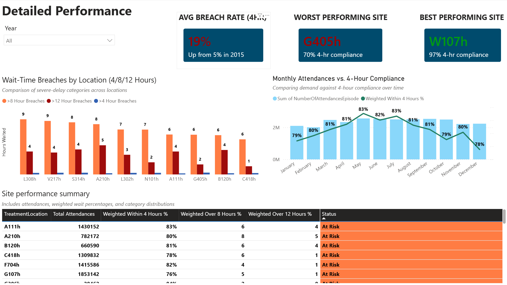

An end-to-end healthcare analytics solution evaluating NHS Scotland A&E compliance with national wait-time targets and identifying operational performance gaps across treatment locations.
01 — Breakdown of metrics
Key performance indicators
Standard simple averages misrepresent performance when high-volume sites see vastly more patients. This project used attendance-weighted KPIs built with DAX (SUM, SUMX, DIVIDE) to ensure high-volume locations appropriately influenced overall calculations, preventing misleading conclusions from unweighted averages.
Total attendances
29M+
Patient A&E visits analyzed across all NHS Scotland treatment locations
Primary target
4-Hr
National standard: seen, treated, and discharged or admitted within 4 hours
Breach thresholds
8 / 12Hr
Extended wait markers identifying severe operational pressure at site level
Highest recorded annual attendance across all NHS Scotland A&E sites
COVID low
2020
Sharpest attendance drop observed — 2.1M visits, down from 2.87M in 2019
Busiest site
S314h
2.56M total visits — highest attendance volume across all treatment locations
Unplanned share
99%
Nearly all A&E demand is unplanned — patients arriving without a scheduled appointment due to sudden illness or injury
02 — Executive summary
Key takeaways
The analysis surfaced a clear picture of sustained operational pressure across NHS Scotland Emergency Departments. Performance was not just low, it was declining over time with limited recovery, driven primarily by rising attendance volumes and concentrated at a small number of high-impact locations. A critical finding: 99% of all A&E demand is unplanned, meaning capacity planning must account for near-total demand unpredictability.
Weighted compliance with the national 4-hour target dropped sharply after 2020. Recovery was limited, indicating sustained system strain rather than a temporary disruption.
02
Attendance volume is the primary driver of performance
Higher attendance periods consistently correlated with increased wait-time breaches and lower 4-hour compliance, confirming demand pressure as the strongest predictor of operational outcomes.
03
Significant variation exists between treatment locations
Some sites consistently outperformed others under similar demand, suggesting meaningful differences in operational efficiency, staffing, and capacity management worth studying and replicating.
04
Long waits are concentrated at a small number of sites
8-hour and 12-hour breaches were not evenly distributed, a small number of locations contributed disproportionately to severe delays, making them key targets for focused intervention.
05
Weighted KPIs fundamentally changed result interpretation
Using weighted metrics revealed high-volume sites had a far larger impact on overall performance than simple averages suggested. Without weighting, decision-makers would have reached materially different and misleading conclusions.
06
99% of all A&E demand is unplanned
Analysis of attendance categories confirmed that unplanned visits, patients arriving without a scheduled appointment due to sudden illness or injury, account for 99% of all A&E activity. New planned visits (patients referred by a GP with a scheduled arrival time) represent less than 1% of total demand. This makes reactive surge capacity and proactive staffing the most critical operational levers available.
03 — Insight deep dive
Dashboard & analysis
The final solution is a six-page interactive Power BI dashboard. Page one (Overview) covers KPI tracking and historical compliance trends. Page two (Detailed Performance) delivers site-level breach analysis with rankings and a performance summary table with conditional status flags. Page three (Attendance & Traffic) examines demand patterns including annual trends, location volume rankings, and planned vs. unplanned category breakdowns.
Executive Overview
System-wide KPI tracking across 29M+ attendances. Includes weighted
4-hour compliance rate (81%), breach percentages, historical trend
line with 2020 reference annotation, and top 10 underperforming sites
ranked by weighted compliance.

Detailed Performance
Site-level breach analysis filtered to the top 10 worst performers.
Includes 4hr/8hr/12hr grouped bar chart, monthly attendance vs.
compliance dual-axis chart, and a conditional status table
(Critical / At Risk / Monitor / Good) ranked by weighted compliance.
Attendance & Traffic
Demand pattern analysis showing peak year (2019), COVID low (2020),
busiest site (S314h — 2.56M visits), and the critical finding that
99% of all A&E demand is unplanned. Includes annual trend line,
location volume rankings, and planned vs. unplanned category breakdown.
Data preparation — MySQL
Cleaning & structuring raw A&E data
Imported NHS Scotland data into MySQL, converted raw date fields for time-series analysis, performed null-value validation and duplicate detection, and structured the dataset for efficient downstream reporting.
KPI development — Power BI & DAX
Attendance-weighted performance measures
Built weighted compliance measures using SUM, SUMX, and DIVIDE across four breach thresholds (4hr, 8hr, 12hr). This ensured high-volume sites appropriately influenced system-level calculations rather than being diluted by unweighted averaging.
04 — Recommendations
Operational recommendations
Based on analysis findings, six recommendations were developed for underperforming Emergency Department sites. The highest-priority recommendation is highlighted below, it offers the greatest potential for system-wide impact.
Priority recommendation
Prioritize operational reviews at high-volume, low-performing sites
Finding: A small number of locations accounted for a disproportionate share of 8-hour and 12-hour breaches.
Healthcare administrators should focus operational reviews at consistently underperforming sites through workflow assessments, staffing and skill-mix reviews, and benchmarking against top performers. Targeted interventions here will generate far greater system-wide improvement than broad initiatives, because that is where the impact is most concentrated.
Recommendation
Build surge capacity for unplanned demand
99% of all A&E visits are unplanned, the demand is almost entirely unpredictable.
Since scheduled visits represent less than 1% of total activity, capacity planning must prioritize surge readiness over predictable scheduling. Flexible staffing, rapid triage protocols, and real-time demand monitoring are the most critical levers available.
Recommendation
Implement capacity planning during peak demand periods
High attendance volumes consistently drove increased breaches.
Flexible staffing during historically busy periods, additional triage resources at peak hours, and surge protocols for unexpected attendance increases, particularly at S314h and G405h, the busiest sites.
Recommendation
Adopt weighted KPIs as the standard reporting method
Weighted metrics provided a more accurate picture than simple averages.
Attendance-weighted performance reporting should become the standard for all executive dashboards and operational reviews to ensure accurate resource allocation decisions based on actual patient impact.
Recommendation
Investigate and replicate high-performing site practices
Several sites consistently achieved higher compliance under similar demand.
Comparative analysis between high and low performers can surface efficient triage processes and scheduling practices that can be replicated system-wide — starting with sites that consistently outperform peers at similar volumes.
Recommendation
Establish early warning monitoring for breach escalation
Compliance deterioration preceded significant increases in severe breaches.
Monitoring thresholds that trigger alerts when attendance exceeds expected levels or 4-hour compliance begins declining — enabling early intervention before escalation into 8-hour and 12-hour breaches.
Recommendation
Invest in long-term workforce and resource planning
Post-2020 compliance decline suggests structural strain, not a temporary disruption.
Long-term workforce recruitment, capacity expansion, process improvement initiatives, and technology investments to build resilience and support sustainable performance improvement over time.
Overall conclusion
Emergency Department performance is strongly influenced by attendance volume, operational efficiency, and site-specific factors. With 99% of all demand being unplanned, reactive capacity and surge readiness are the most critical operational levers. By focusing on high-volume underperforming locations, adopting weighted performance measures, and implementing proactive staffing strategies, healthcare organizations can improve patient flow, reduce wait-time breaches, and enhance compliance with national performance targets.